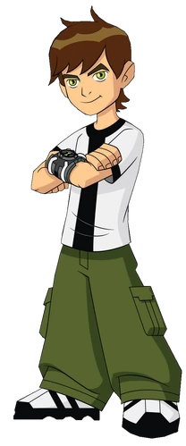

Originalmente, Ben era um garoto de 10 anos que cresceu em Bellwood. Em uma viagem de ferias com sua prima Gwendolyn(Gwen) e seu avó Max que os acompanha e os leva em sua van. No meio da viagem Ben acaba encontrando um relogio alienigena que o permite transformar em aliens
